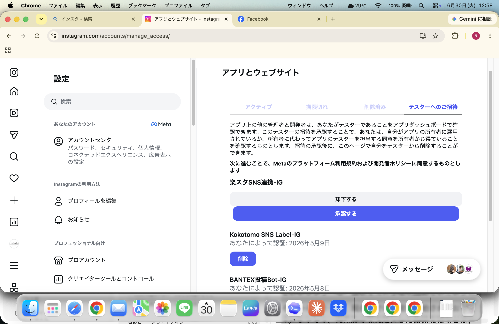
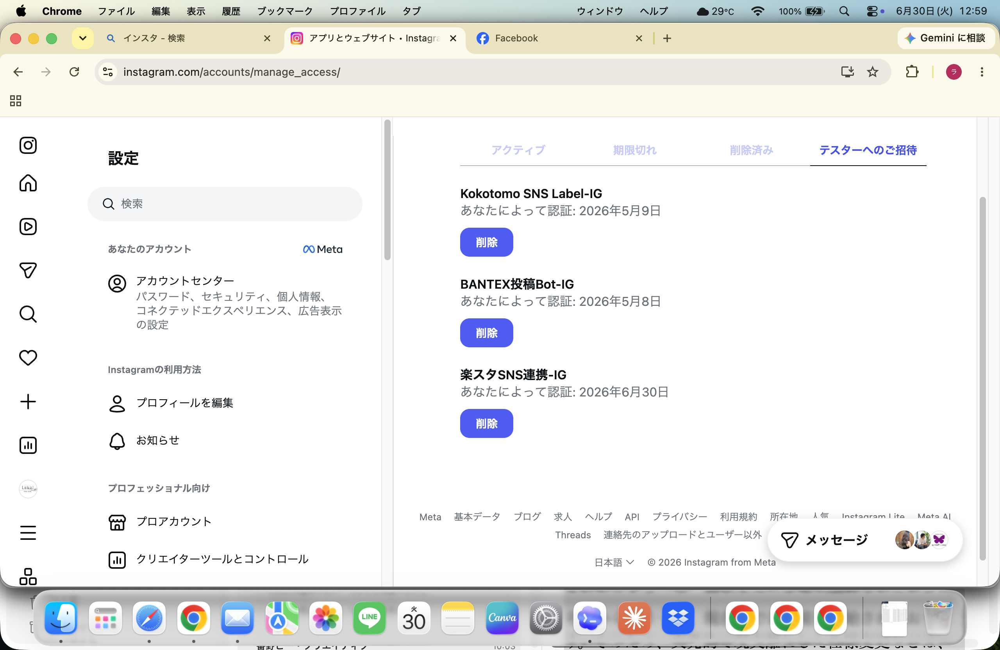
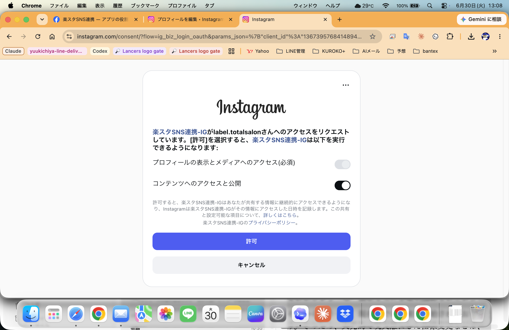
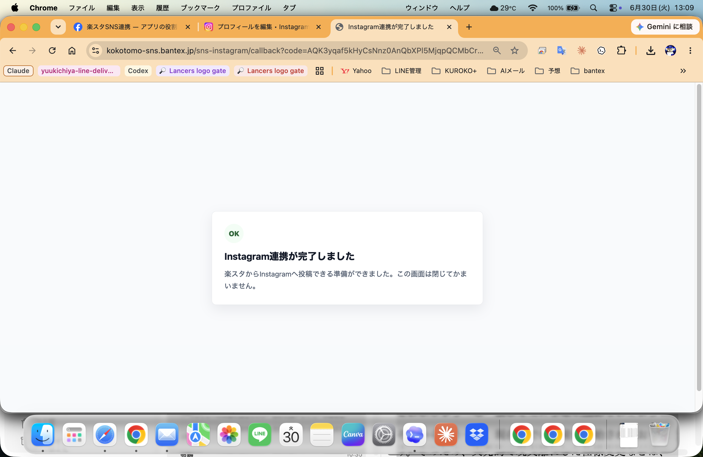
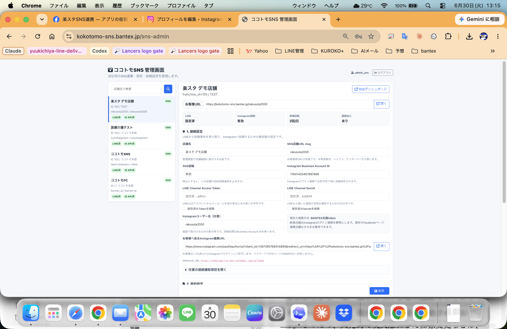
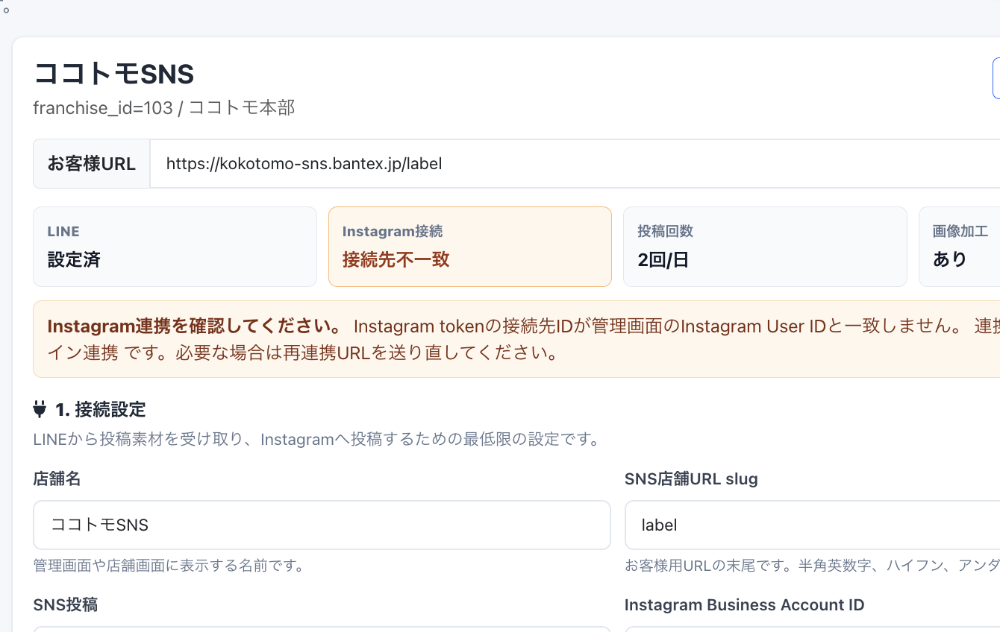
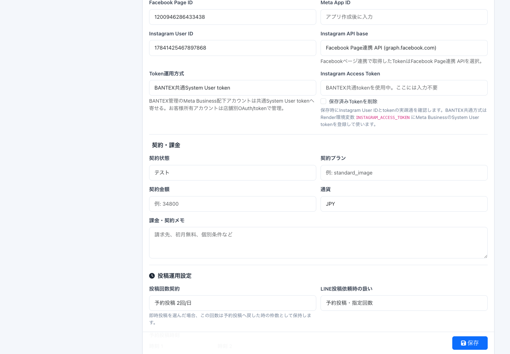
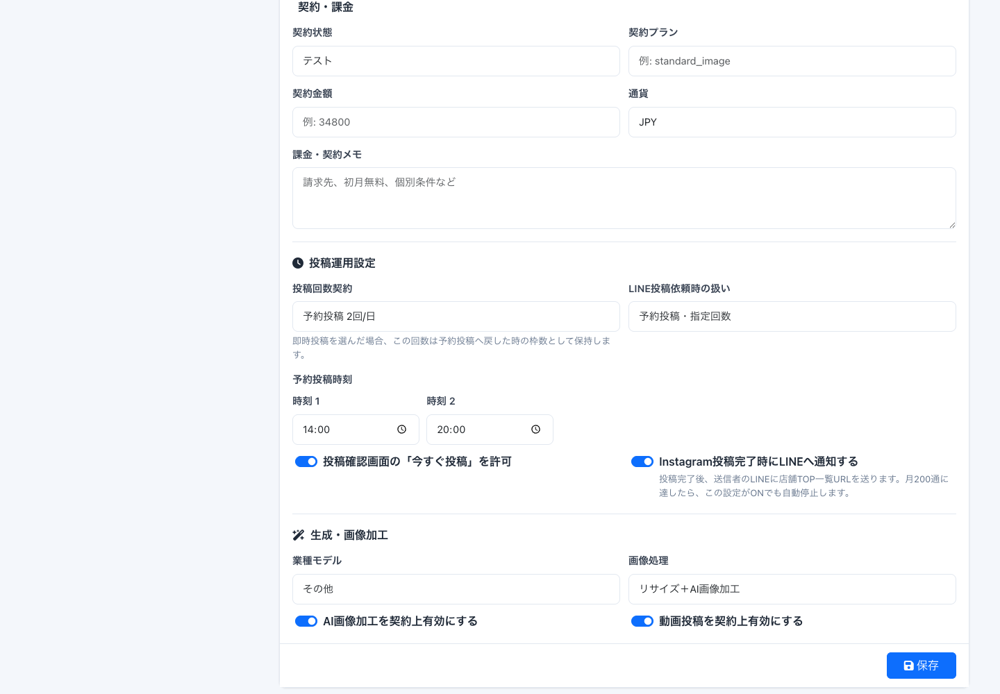

Instagram Login方式 新規顧客追加マニュアル
2026-06-30版。新規顧客はFacebookページ追加を標準作業から外し、店舗Instagram本人の承認で接続します。
新標準: お客様または店舗担当者が対象Instagramにログインし、楽スタSNS連携の許可画面で 許可 を押す。これで楽スタからInstagramへ投稿できる状態になります。
今回変わったところ
Facebookページ不要新規顧客の標準手順では、Facebook店舗ページを作らずInstagramだけで接続します。
接続方式管理画面では
Instagramのみ連携 と表示します。旧方式は Facebook＆Instagram連携 のまま残します。承認する人対象Instagramにログインできる人が許可します。labelなら
label.totalsalon の画面です。開発中だけテスターApp Review完了前はInstagramテスター承認が必要です。本番化後は通常顧客にテスター追加は不要です。
旧方式の104/105などは触りません。既存のFacebookページ連携方式は残したまま、新規顧客だけInstagram Login方式へ寄せます。
村上さんと二人で管理するための設定
これは新規顧客ごとではなく、最初に一度だけ行います。
| 場所 | 村上さんに付ける権限 | 目的 |
|---|---|---|
| Meta Developers / 楽スタSNS連携 | 管理者または開発者 | App Review、Instagramテスター追加、アプリ設定確認を二人で見られるようにする |
| 楽スタSNS管理画面 | 運営側ログインID | 店舗追加、接続URL発行、契約・投稿設定を行う |
| 顧客本人のログイン | 店舗InstagramのOAuth許可。パスワードや2段階認証は顧客本人が操作する |
村上さんが触るのは、Meta Developersのアプリ役割と、楽スタSNS管理画面です。顧客Instagramのパスワードや2段階認証コードは聞きません。
新規顧客の標準フロー
Instagramをプロアカウントにする
顧客側でビジネス/クリエイターのプロアカウントにします。Facebookページは標準では作りません。
顧客側でビジネス/クリエイターのプロアカウントにします。Facebookページは標準では作りません。
楽スタ管理画面で店舗を作る
店舗名はInstagramアカウント名に寄せます。例:
店舗名はInstagramアカウント名に寄せます。例:
label.totalsalon。LINE連携と契約設定を保存する
LINE Channel情報、投稿回数、画像加工、予約時刻を決めて保存します。
LINE Channel情報、投稿回数、画像加工、予約時刻を決めて保存します。
Instagram連携URLを開く
管理画面の
管理画面の
お客様へ送るInstagram連携URL を対象Instagramで開きます。開発中はテスター招待を承認する
App Review前だけ、Instagram側の
App Review前だけ、Instagram側の
アプリとウェブサイト で招待を承認します。OAuth許可を押す
許可画面で対象アカウント名が合っていることを確認し、
許可画面で対象アカウント名が合っていることを確認し、
許可 を押します。接続完了とヘルスチェック
管理画面で
管理画面で
Instagramのみ連携、接続有効、ユーザー名一致を確認します。LINEからテスト投稿
写真1枚と短いメモを送り、投稿案作成からInstagram投稿まで確認します。
写真1枚と短いメモを送り、投稿案作成からInstagram投稿まで確認します。
Instagram承認のスクショ手順

アプリとウェブサイト で 楽スタSNS連携-IG が出たら 承認する を押します。
楽スタSNS連携-IG が一覧に残ります。App Review完了後はこのテスター招待手順を通常顧客には行いません。
label.totalsalon へのアクセス要求になっていることを確認してから 許可 を押します。
楽スタ管理画面で確認するところ

Instagramのみ連携 と分かるようにします。labelのようにFacebookページなしの店舗はこの方式です。| 項目 | Instagram Login方式の値 |
|---|---|
| 店舗名 | Instagramアカウント名。例: label.totalsalon |
| SNS店舗URL slug | 短い英数字。例: label |
| Instagramユーザー名 | 例: label.totalsalon |
| 連携方式 | Instagramのみ連携 |
| Instagram Access Token欄 | 手入力しない。OAuth callbackで自動保存されます。 |
| Facebook Page ID | 新方式では標準入力しません。旧方式店舗だけ使います。 |



Meta本番申請で準備するもの
現在の 楽スタSNS連携 は開発・審査前です。App Reviewが通り、Live運用に切り替えるまでは、通常顧客はテスター追加なしでは使えません。
| 項目 | 現在の値/準備内容 |
|---|---|
| Meta App | 楽スタSNS連携 / App ID 1020953476972538 |
| Instagram App ID | 1367395768414894 |
| Redirect URI | https://kokotomo-sns.bantex.jp/sns-instagram/callback |
| 権限 | instagram_business_basic、instagram_business_content_publish |
| 申請動画 | 管理画面で連携URLを発行、Instagramで許可、callback完了、LINEから投稿、Instagramに公開される流れを録画 |
| 公開ページ | プライバシーポリシー、利用規約、データ削除説明、アプリドメイン |
| テストアカウント | Meta審査担当が試せるInstagramテストアカウントと楽スタ管理画面の限定ログイン |
申請用テスト店舗を用意
label本番とは別に、審査担当が見ても問題ないデモInstagramとデモLINEを用意します。
label本番とは別に、審査担当が見ても問題ないデモInstagramとデモLINEを用意します。
録画を作る
個人情報や本番顧客のDM、token、Secretが映らない画面だけを録画します。
個人情報や本番顧客のDM、token、Secretが映らない画面だけを録画します。
権限説明を書く
basic はアカウント確認、content_publish は店舗がLINEで送った素材をInstagramへ投稿するため、と説明します。Meta DevelopersでApp Reviewへ提出
提出後、差し戻しがあれば動画・説明・テスト手順を修正します。
提出後、差し戻しがあれば動画・説明・テスト手順を修正します。
承認後にLive運用へ
承認済み権限でLive運用できる状態になったら、新規顧客のテスター追加手順を廃止します。
承認済み権限でLive運用できる状態になったら、新規顧客のテスター追加手順を廃止します。
本番申請はMeta Developers上の操作が必要です。ログイン、2段階認証、Business認証が出た場合は本人が画面で操作します。
止める条件
| 状態 | 判断 |
|---|---|
| OAuth画面のアカウント名が違う | 押さずに停止。正しいInstagramへログインし直します。 |
| 開発中に「開発者の役割が不十分」 | Instagramテスター未承認。対象Instagramの テスターへのご招待 を確認します。 |
| App Review前に一般顧客で使えない | 正常です。テスター追加が必要です。本番化後に解消します。 |
| 接続先不一致が出る | ユーザー名を確認。現在の新方式ではusername一致でOKにしています。 |
| 104/105がNGになった | 作業停止。旧方式を壊した可能性があるため、設定変更を戻さず原因を確認します。 |
| token、Secret、Renderを触りたくなる | 通常の新規顧客作業では触りません。別作業として切り分けます。 |